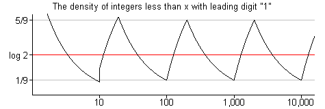
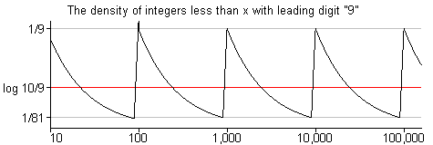
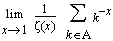
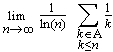

FAQ: Does Benford's Law Apply to Primes?
By Chris Caldwell
Perhaps the most difficult to quantify question we address in this FAQ is:
If we pick several random prime numbers, will they begin with the digits 1, 2, 3, . 9 equally often, or will the digit 1 be more common (as Benford's law might suggest)?
The short answer, in the cases when there is an answer, is "yes, the leading digit 1 occurs more often, in fact over 30% (log10 2) of the time." And this has little to do with the "primeness" of the numbers, it is a common feature of many distributions. But we are in truly treacherous territory here--we will first define the question much more carefully, then we can explain why Benford's lawdoes indeed apply to primes.
Pick a random integer or two...
The answer to our question clearly depends on where the prime numbers come from. It is very difficult to quantify the instructions "pick a random integer" or "pick a random prime" in a way in which satisfies the most basic laws of probability.
To see what we mean let A and B be subsets of the positive integers N. If P(A) is the probability that the "random" integer we pick is in the set A , then we would need that
- 0 < P(A ) < 1,
- P(N) = 1, and
- if A and B are disjoint, then P(A ∪ B) = P(A) + P(B).
Now if each integer is equally likely, we then have
P( {1, 2, 3, ..., n} ) = nP( {1} ),
so P( {1} ) < 1/n for every integer n. The probability of picking any one integer (hence any set of integers), would have to be zero! So when we say "pick a random integer" we can not pick from the whole set of positive integers with each integer being equally likely. (See [Raimi1969] and [Raimi1976] for a deeper discussion of these issues and Benford's law.)
Okay, what are our options?
One way of addressing this problem is to just consider a finite subset of the integers at a time. Then take the limit as the finite sets expands towards the whole set. For example, the natural density of a set A is defined to be the limit as n goes to infinity of the sequence
( the number of elements in A that are less than n ) / n
The even numbers have natural density 1/2. The set of integers divisible by the prime p has natural density 1/p. The set of prime numbers has natural density 0. But sadly, the set of integers with leading digit one (as well as the prime numbers with leading digit one) have no natural density. For these sets the ratio above oscillates as n increases and never approaches any single value.


To handle this problem some have suggest that we find an "average value" of this oscillating ratio. For the set of integers beginning with the digit d, the average value is log10(1 + 1/d) [Flehinger1966]. The same is true for the average value of the relative number of primes beginning with the digit d. Implicitly the methods chosen for averaging in these articles give more weight to the smaller integers, this leads us to our next approach.
Other distributions...
One way to interpret "pick a random integer" is to assign non-zero probabilities (also called densities) to each integer, and to do this in a way that the sum of the densities is one. (This of course means the integers can not be equally likely, and usually our choice ensures that the smaller integers are more likely than the larger.) For example, the Zeta density d(A) of a set of positive integers A is defined to be
d(A) = .
When the natural density exists, then so does the Zeta density and the two agree [Diaconis]. For the positive integers the Zeta density follows Benford's law. Bombieri showed that the same is true for the relative Zeta density for the primes [Serre1974].
Here is another way of defining density, called the logarithmic density, is
d(A) = .
Again this this complies with Benford'' law for both the positive integers and the (relative densities of) primes [Whitney1972].
These densities might looked be on favorably by those interested in primes (recall the natural density of the set of multiples of p is 1/p). But here is the good news--we do not need to explicitly choose to answer the question! For the set of integers, Cohen showed that a distribution following Benford's' law must result for any selection of finitely additive density that agrees with the natural density when it is defined and satisfies the one extra condition:
density of any set S = density of the set { n | n/2 or (n-1)/2 is in S }.The proof is quite short [Cohen1976]. Note this condition above is just a combination of the utterly reasonable conditions that
- the density of 2S is 1/2 of the density of S, and
- the density of S+1 (add 1 to each element of S) is the density S.
Later Cohen and Katz showed that an even larger set of choices of density give the same result for the set of primes [CK1984]. That is, if you can think of any "reasonable density" to apply when addressing the question of this page (one that agrees with the natural one when possible plus meets a couple extra criteria), then the answer is in keeping with Benford's law: the string of leading digits d occur with relative frequency log10(1 + 1/d).
A couple examples
For example, Blair Kelly collects prime factors of Lucas and Fibonacci numbers. When David Broadhurst scanned about 25 thousand such primes greater than a million, he found (December 2001):
First Digit of factors of Lucas and Fibonacci numbers:
leading digit d 1 2 3 4 5 6 7 8 9 number of primes 7869 4456 3107 2342 1977 1665 1360 1255 1107 percentage 31.3% 17.7% 12.3% 9.3% 7.8% 6.6% 5.4% 4.9% 4.4% predicted by Benford's law 30.1% 17.6% 12.5% 9.7% 7.9% 6.7% 5.8% 5.1% 4.6%
Andy Steward respondedto David's data with the following table formed by scanning his files of factors of Generalized Repunit Numbers, these include results from the Cunningham projectas well as those from Brent, Edgington, Mishima and Morimoto. His list of 926,663 prime factors of GRU's with at least 5 digits yielded (early December 2001):
First Digit of Generalized Repunit Prime Factors:
leading digit d 1 2 3 4 5 6 7 8 9 number of primes 291554 165388 115234 87749 71989 59433 50697 44610 40009 percentage 31.5% 17.8% 12.4% 9.5% 7.8% 6.4% 5.5% 4.8% 4.3% predicted by Benford's law 30.1% 17.6% 12.5% 9.7% 7.9% 6.7% 5.8% 5.1% 4.6%
Second Digit of Generalized Repunit Factors:
second digit d 0 1 2 3 4 5 6 7 8 9 number of primes 111386 106782 101980 97322 92176 89854 85939 83585 79475 78164 percentage 12.0% 11.5% 11.0% 10.5% 9.9% 9.7% 9.3% 9.0% 8.6% 8.4% predicted by Benford's law 12.0% 11.4% 10.9% 10.4% 10.0% 9.7% 9.3% 9.0% 8.8% 8.5%
Benford's law requires that the significant digits are dependent, so it might be interesting to use this data and find the number beginning with given two-digit initial digit strings.
Final comments
Benford's law shows up in many unexpected places: surface areas of rivers, house addresses, ... One of the reason for this is that there is a sort of central limit theorem which states that if we repeatedly pick random entries from random distributions, the result tends towards the distribution of Benford's law [Hill1996]. It has been used to catch check fraud, and is used to analyze computer storage methods [Knuth97, sect. 4.2]. But does it have a use in prime number theory? Not that I know of (but it is indeed curious).